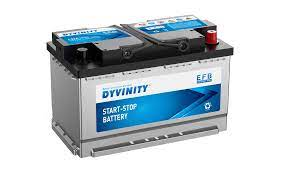
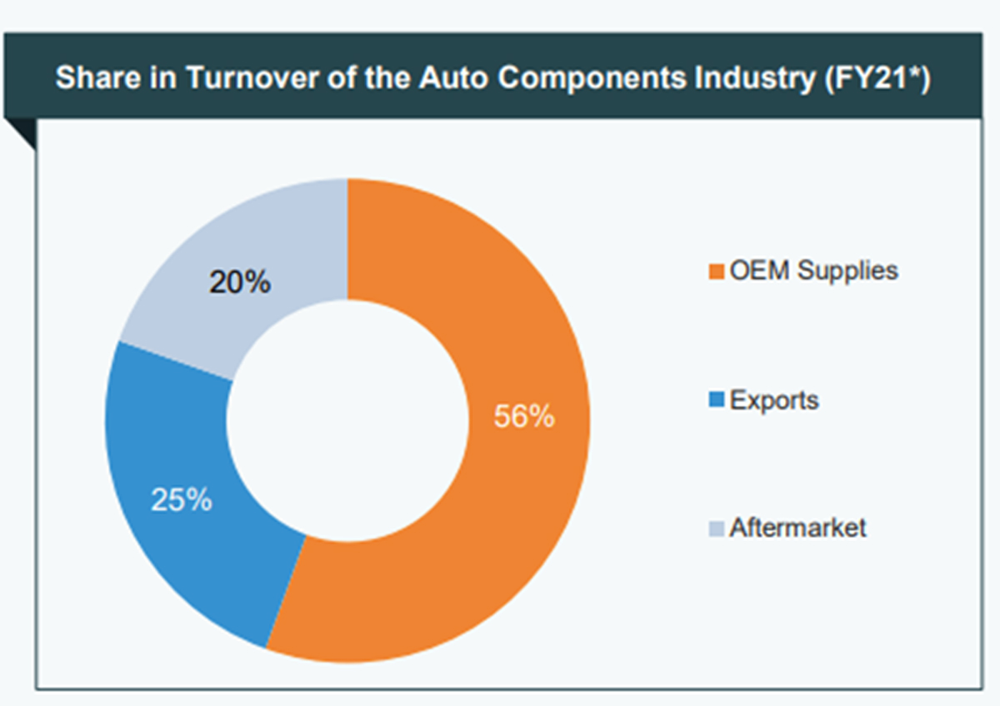
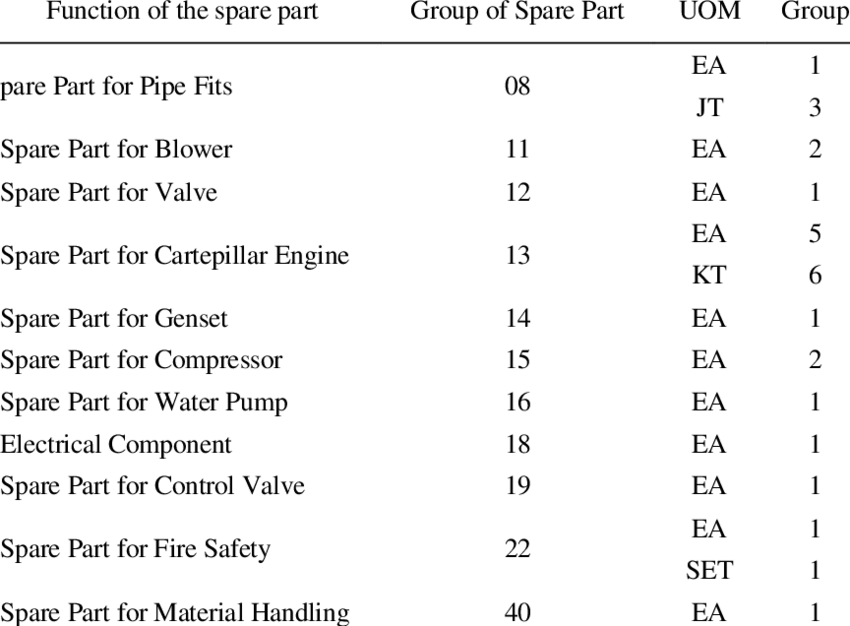

Maintaining a two-wheeler requires careful attention to various components, especially vital ones.
Regular
check-ups and timely replacement of damaged or worn parts are essential for the smooth operation of the
vehicle and
your safety. In this detailed guide, we shall take a comprehensive look at various types of two-wheeler
spare parts
and the factors to consider while purchasing them.
RADIATOR
The radiator is a heat exchanger used to remove heat from the coolant in the cooling system to prevent
your
vehicle’s engine from overheating. Hot coolant is routed through the radiator, where the coolant can
exchange heat
with the passing air.
For general maintenance on your radiator, check your coolant levels twice a year. Replacing a radiator can
take most
of the day, but is a doable DIY job. If you need to replace your radiator, use AutoZone’s how
to guide to get the
job done right. Additionally, you should reference your vehicle’s repair manual, as each vehicle is
slightly
differently
AC COMPRESSOR
The AC Compressor is responsible for pumping coolant throughout your system and starting the process of
cooling
your car. Without it, the AC system will not work Summer heats show that your vehicle’s AC system is
essential, so
AutoZone has put together advice on how your AC works and how to recharge your AC? if it is not
working.
Duralast Gold battery on a shop table in front of an open Nissan Altima.

BATTERY
The battery stores ergy in chemical form so it can be released as electricity to run your vehicle’s
electrical
components. Other terms you may run into when talking about a car battery
battery technological A means of connecting the battery to the vehicle’s electrical system.
The three types of battery terminals are post or top, side, and L.
Battery Capacity: The energy output of a battery measured in amp/hours.
Cold Cranking Amps: Abbreviated CCA, this refers to the amount of current that the battery can supply to
the
vehicle. Group Size: The group size is just what it sounds like, the size of the battery. Common group
sizes
are: 24, 24F,
25, 34, 35, 51, 51R, 52, 58, 58R, 59, 65
AGM: This stands for absorbent glass mat, a design in which sulfuric acid is absorbed by a fiberglass mat,
making
the battery spill-proof and better at holding a charge.
AutoZone wants to make sure you have the right battery for your vehicle, and you have all the trustworthy
advice you
need when it comes to batteries.
Theory of Constraints in automotive spares
A look at the product-wise share in aftermarket turnover throws light on the four product groups, i.e.,
DTS, engine, electrical and electronic, and cooling systems taking lion’s share of more than 70%, implying
that the component industries operating in the above product segment have a ‘pot of gold’ waiting for them
to grab. But the question is whether the players in this industry are ready to grab this aftermarket
potential presented to them? Visweswaran Sundararaman and Akshat Agrawal share some insights

While currently India is the sixth-largest automobile producer worldwide, after China, US, Japan, Germany and South
Korea, thanks to robust demand and government policy support towards the ‘Make in India’ movement, it is expected to
become the third-largest by 2026. The automotive components industry accounts for 2.3% of India’s GDP and 25% to its
manufacturing GDP, providing employment to 5 million people, as per the Indian Brand Equity Foundation. So far the
automotive components industry has registered a CAGR of 6%, reaching USD 49.3 billion in FY20 with exports growing
at a CAGR of 7.6% to reach USD 14.5 billion in FY20.
Catapulted by a manufacturing-friendly environment, the industry aims to achieve USD 200 billion in revenue by 2026
with exports reaching USD 80 billion. The automotive component supplies to OEMs contribute to 56% of the overall
turnover with aftermarkets and exports sales contributing to 25% and 20%, respectively. The aftermarket turnover
increased at a CAGR of 9.57% from USD 6.8 billion in FY16 to USD 9.8 billion in FY20 and is expected to reach USD 32
billion by 2026, as per data published by the Automotive Component Manufacturing Association.
Unique Industry Characteristics
while deep diving, one should be aware of the unique characteristics or insights with reference to this sector.
1) Long supply chain that includes Tier II vendor – Tier I vendor – OEM – distributor, dealer and wholesaler –
retailer – mechanic – consumer.
• Except the consumer, everyone is chasing their respective monthly targets.
• Movement of stocks from one entity to the next entity is registered as ‘sales’ while the irony is that actual sale
happens only when the consumer purchases from the outlet.
• Unlike FMCG, it is difficult to influence sale of automotive components as the significant portion of sale is
driven by failure of parts that need replacement.
• Failure of parts can cause bigger damage, impacting vehicle utilisation.
• Hence, availability of parts at the retail outlets is not only very critical as consumers show close to zero
tolerance time but also impacts future sales potential of OE with after-sales and service being important factors.
• It is not possible to predict all the possible failures and hence it is difficult to predict demand for automotive
components in terms of what, where and when.
• The only way possible for the companies to react to such an unpredictable demand is through ‘forecasting’.
• There is a strong belief that forecasting enables them to ‘push the stocks’ closer to the point of sale.
• The co-existence of availability and unavailability across the network is not a strange phenomenon at all.
2) Same parts are available at one location while they can be unavailable at other locations.
3) In the same location, parts may be available at some point of time while unavailable at some other point of time.
• Factors such as stock ageing, territory intrusion or invasion, limited availability of working capital, space,
etc., induce inconsistency in pricing behaviour at outlets.
• This market is the best example of a red ocean where the competition is fierce in terms of pricing and the
consumer is confused about product quality.
It might be shocking to OEMs that the universe of competition is beyond their cognizance:
a) From OEM parts with ‘OEM’ branding and pricing.
b) From vendors who supply to OEM also competing with OEM in the aftermarkets.
c) Though the products are same inside the box, branding or packaging is different.
d) From the manufacturers who make similar products but do not supply to OEMs, i.e., known brands with comparable
quality.
Key Challenges
When forecasting is considered as the only possible way to deal the unpredictable demand and supply of the
aftermarket, the forecasting signal mechanism upstream gets translated as monthly schedules for production to Tier I
and Tier II vendors. However, actual production significantly varies from planned schedules thanks to various
batching considerations or availability of resources such as men, machines and materials as well as change of
schedules since the actual off-take could be different from the forecasted plan and change of priorities, i.e., OE
versus spares versus VOR, etc.
This distortion leads to greater production of some items than the actual demand while some items are produced in
lesser quantities than the actual demand. And this distortion grows wider and bigger as it goes towards the
downstream thanks to multiplier effect due to the coexistence of two facts, namely, variation and dependent
entities. Items produced more than the actual demand creates challenges including requirement of more space, more
capital, capacity stealing, i.e., capacity used up in producing items which are not needed in the immediate horizon,
material stealing, i.e., components used up in producing items which are not needed in the immediate horizon
classifications

What's the differences between service parts and spare parts?
Spares has a material master record (material Type ERSA) and Consumables doesn't have any material master.
In PO creation, You have to give the short text, unit of measure, material group manually for consumable
item.
And for spares it will be picked from material master record.
Spares will be managed by stock.